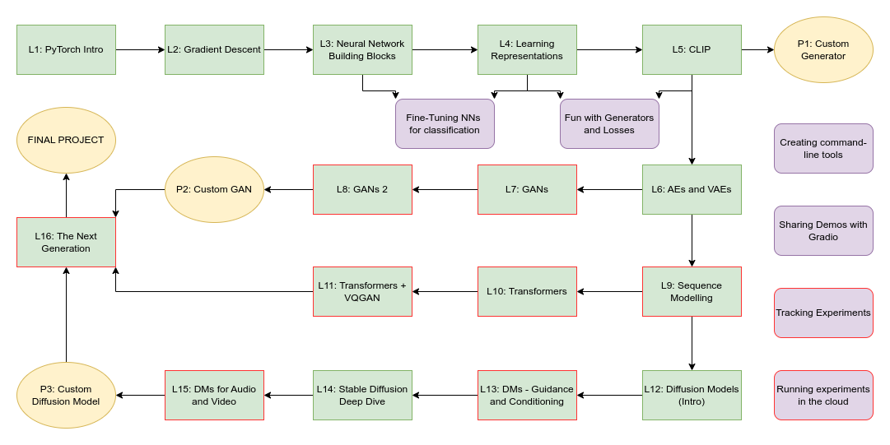

The Generative Landscape
A course and library designed to get you up to speed on the exciting field of generative modelling.
UPDATE: I’m taking a break from development for a while, my apologies. The first ~5 lessons are mostly done, I’ve removed the unfinished ones (red in the diag below) from the outline on the left for now.
The Discord is a good place to go for updates and to find people who might be keen on discussing things and working on projects.
Check out the Getting Started page for an overview of the course and more information on things like study groups.
Check out the Library page for information on the tglcourse library that accompanies the course.
FAQs
Some course-related questions that have tricked in:
- ‘Any prerequisites?’: If you’re comfortable with a bit of Python and using Jupyter Notebooks you should be ready to take this course. No prior deep learning knowledge is assumed, and although we will dive fairly deep fairly quickly I’ve tried to link lots of resources wherever possible.
- ‘How long is the course?’: There are 15 core lessons plus a number of bonus notebooks. You can take them at whatever pace you find enjoyable, or join in with a study group on Discord to work through one a week.
- ‘Does the HuggingFace Diffusion Model Class supercede this?’: I’ve teamed up with HF to help build their diffusion model class, sharing a lot of material between it and this course. Both will have unique things to add - I’d recommend signing up for theirs even if you’re working through ‘The Generative Landscape’ as well, since there will be extra projects and fun community activities to get involved in with that one too.
- ‘Can genereative landscape be real?’: Yes, if you subscribe to David Chalmers ‘simulation realism’ ;)
- ‘Will it include stable diffusion?’: Yes, see lesson 14
- ‘Will we learn how to adapt these method to 3d?’: At some point I’d love to add more 3D related content - stay tuned for bonus notebooks once the craziness of the course launch calms down.
- ‘I hope this includes generating text!’: It does! Lessons 9 - 11 deal with modelling sequences, and should set you up with everything you need to make models which can spew out AI-generated gibberish all day long.
- ‘My question isn’t in the FAQs?’: OK, so I made this one up. But if you have a burning question, send it to me and I’ll add it here.
CI status: 
Page stats: Total Hits:  Page visitors:
Page visitors: